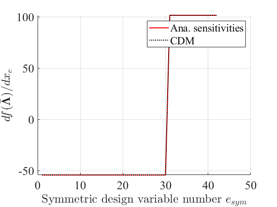

Eigen-analysis and Eigenvalue Sensitivity Analysis of Trusses
The analysis are performed on a series of trusses with various geometric and design variable symmetries
Contents
1.Truss Domes
clear;
clc;
close all;
1.1 Geometry
N = 8; % >= 3 number of subsections r = 2; h = 1.0; imp_flag = 0; % 1: imperfections at the top node; 0: no imperfection [nele, nnodes, coord, conn, fixity] = truss_data_3d_spacetruss_Cnv(N, r, h, imp_flag); plot_pts3d(coord); plot_3d_truss(nele, coord, conn, 1);
1.2 Set design variable symmetry
chktype = 1,2,3,4,5
chktype = 1; if chktype==3 if mod(N,2) ~=0 error("Check type 3 is valid for N odd") end end if chktype==1 % Full Cnv - group ng = 3; group(1).gid = 1:N; group(2).gid = N+1:3*N; group(3).gid = 3*N+1:nele; xv = [150, 200, 50]; elseif chktype==2 % Cn subgroup: N-rotations, reflections are removed ng = 4; group(1).gid = 1:N; group(2).gid = N+1:2*N; group(3).gid = 2*N+1:3*N; group(4).gid = 3*N+1:nele; xv = [150, 200, 250, 300]; elseif chktype==3 % C2 subgroup = Z2 ng = 3 + N/2; group(1).gid = 1:N; group(2).gid = N+1:2*N; group(3).gid = 2*N+1:3*N; xv = [150, 200, 250]; for r=1:N/2 group(r+3).gid = [3*N+r,3*N+r+N/2]; xv(r+3)= xv(3) + r*25; end % xv = [150, 200, 250, 50, 25, 20]; elseif chktype==4 % No symmetry ng = 3 + N; group(1).gid = 1:N; group(2).gid = N+1:2*N; group(3).gid = 2*N+1:3*N; xv = [150, 200, 250]; for r=1:N group(r+3).gid = 3*N+r; xv(r+3) = xv(3) + r*25; end elseif chktype==5 % No symmetry ng = nele; x0 = 100; xv = zeros(nele,1); for r=1:nele group(r).gid = r; xv(r) = 100 + (r-1)*10; end end clc close all eid_flag = 0; plot_3d_truss_color(fixity, nele, coord, conn, ng, group, eid_flag);
1.3 Eigen-analysis
% Set physical properties E = 100*ones(nele,1); % Young's modulus A = ones(nele,1); % unit design variable (area) rho = 0.5*ones(nele,1); % mass density for k=1:ng A(group(k).gid) = xv(k); end type = 2; [emodes, evals] = truss_eigenanalyses_3d(nele,nnodes, fixity, conn, coord, A, E, rho, type); % evals: eigenvalues; emodes: eigenvectors
1.4 Eigenvalue sensitivity w.r.t symmetric variables
dh = 1.0E-6; % perturbation n_sym_var = size(group,2); % number of symmetric variables sz = numel(evals); % number of free degrees of freedom chkcdm_tensor = zeros(n_sym_var,sz,2); for j=1:n_sym_var sid_chk = group(j).gid; Ap = A; Ap(sid_chk) = A(sid_chk) - dh; [emodes1, evals1] = truss_eigenanalyses_3d(nele,nnodes, fixity, conn, coord, Ap, E, rho, type); Ap = A; Ap(sid_chk) = A(sid_chk) + dh; [emodes2, evals2] = truss_eigenanalyses_3d(nele,nnodes, fixity, conn, coord, Ap, E, rho, type); deval_dx_cdm = (evals2 - evals1)/(2.0*dh); % for k=1:nele [ddata(k).dKff_dA, ddata(k).dMff_dA] = truss_derivatives_3d(nele, nnodes, fixity, conn, coord, E, rho, k); end % dKff_dxr = zeros(size(ddata(1).dKff_dA)); dMff_dxr = zeros(size(ddata(1).dMff_dA)); for k=1:numel(sid_chk) dKff_dxr = dKff_dxr + ddata(sid_chk(k)).dKff_dA; dMff_dxr = dMff_dxr + ddata(sid_chk(k)).dMff_dA; end % deval_dxr = zeros(sz,1); for k = 1:sz deval_dxr(k) = emodes(:,k)'*(dKff_dxr -evals(k)* dMff_dxr)*emodes(:,k); end chkmat = [deval_dx_cdm, deval_dxr]; chkcdm_tensor(j, :, :) = chkmat; end num_zero_evals = 0; % number of zero-eigenvalue target_eig = 10; % the order of the eigenvalue of interest target_eig = target_eig + num_zero_evals; de_dxall = chkcdm_tensor(:,target_eig,2); % analytical sensitivity de_dxall_cdm = chkcdm_tensor(:,target_eig,1); % CDM sensitivity
2. Tetrahedral Truss
clear;
clc;
close all;
2.1 Geometry
r = 2;
imp_flag = 0; % 1: imperfections at the top node; 0: no imperfection
[nele, nnodes, coord, conn, fixity] = truss_data_3d_tet(2,imp_flag);
plot_pts3d(coord);
plot_3d_truss(nele, coord, conn, 1);


2.2 Set design variable symmetry
chktype = 1,2,3
chktype = 2; if chktype==1 % S4 group ng = 2; group(1).gid = 1:6; group(2).gid = 7:10; xv = [100, 200]; elseif chktype==2 % C3v subgroup: 3 rot + 3 ref ng = 3; group(1).gid = 1:3; group(2).gid = 4:6; group(3).gid = 7:10; xv = [100, 150, 200]; elseif chktype==3 % No symmetry ng = 6; group(1).gid = 1:3; group(2).gid = 4:6; group(3).gid = 7; group(4).gid = 8; group(5).gid = 9; group(6).gid = 10; xv = [100, 150, 200, 150, 175, 225]; end clc close all eid_flag = 0; plot_3d_truss_color(fixity, nele, coord, conn,ng,group,eid_flag);

2.3 Eigen-analysis
% Set physical properties E = 100*ones(nele,1); % Young's modulus A = ones(nele,1); % unit design variable (area) rho = 0.5*ones(nele,1); % mass density for k=1:ng A(group(k).gid) = xv(k); end type = 2; [emodes, evals] = truss_eigenanalyses_3d(nele,nnodes, fixity, conn, coord, A, E, rho, type); % evals: eigenvalues; emodes: eigenvectors
2.4 Eigenvalue sensitivity w.r.t symmetric variables
dh = 1.0E-6; % perturbation n_sym_var = size(group,2); % number of symmetric variables sz = numel(evals); % number of free degrees of freedom chkcdm_tensor = zeros(n_sym_var,sz,2); for j=1:n_sym_var sid_chk = group(j).gid; Ap = A; Ap(sid_chk) = A(sid_chk) - dh; [emodes1, evals1] = truss_eigenanalyses_3d(nele,nnodes, fixity, conn, coord, Ap, E, rho, type); Ap = A; Ap(sid_chk) = A(sid_chk) + dh; [emodes2, evals2] = truss_eigenanalyses_3d(nele,nnodes, fixity, conn, coord, Ap, E, rho, type); deval_dx1cdm = (evals2 - evals1)/(2.0*dh); % for k=1:nele [ddata(k).dKff_dA, ddata(k).dMff_dA] = truss_derivatives_3d(nele, nnodes, fixity, conn, coord, E, rho, k); end % dKff_dx1 = zeros(size(ddata(1).dKff_dA)); dMff_dx1 = zeros(size(ddata(1).dMff_dA)); for k=1:numel(sid_chk) dKff_dx1 = dKff_dx1 + ddata(sid_chk(k)).dKff_dA; dMff_dx1 = dMff_dx1 + ddata(sid_chk(k)).dMff_dA; end % sz = numel(evals); deval_dx1 = zeros(sz,1); for k = 1:sz deval_dx1(k) = emodes(:,k)'*(dKff_dx1 -evals(k)* dMff_dx1)*emodes(:,k); end chkmat = [deval_dx1cdm, deval_dx1]; chkcdm_tensor(j, :, :) = chkmat; end num_zero_evals = 3; % number of zero-eigenvalue target_eig = 2; % the order of the eigenvalue of interest target_eig = target_eig + num_zero_evals; de_dxall = chkcdm_tensor(:,target_eig,2); % analytical sensitivity de_dxall_cdm = chkcdm_tensor(:,target_eig,1); % CDM sensitivity
3. Octahedral Truss
clear;
clc;
close all;
3.1 Geometry
r = 1; [nele, nnodes, coord, conn, fixity] = truss_data_3d_octahedron(r); plot_pts3d(coord); plot_3d_truss(nele,coord,conn,1);
3.2 Set design variable symmetry
chktype = 1,2,3,4
chktype = 3 ; if chktype == 1 % All symm - group: S4 x S2 ng = 2; group(1).gid = 1:12; group(2).gid = 13:18; xv = [150, 200]; elseif chktype == 2 % Symm subgroup = C4v = 4 rot + 4 ref ng = 4; group(1).gid = 1:12; group(2).gid = 13:18; group(3).gid = [4,8,12,10]; group(4).gid = [3,11,7,9]; group(1).gid = setdiff(group(1).gid,group(3).gid); group(1).gid = setdiff(group(1).gid,group(4).gid); xv = [150, 300, 225,250]; % xv = [150, 200, 150, 150]; elseif chktype == 3 % Symm subgroup = C2v = 2 rot + 2 ref ng = 4; group(1).gid = 1:12; group(2).gid = 13:18; group(3).gid = [2,5]; group(4).gid = [1,6]; group(1).gid = setdiff(group(1).gid,group(3).gid); group(1).gid = setdiff(group(1).gid,group(4).gid); xv = [150, 200, 150, 175]; elseif chktype==4 % No symmetry ng = nele; x0 = 100; xv = zeros(nele,1); for r=1:nele group(r).gid = r; xv(r) = x0 + (r-1)*10; end end clc close all eid_flag = 0; plot_3d_truss_color(fixity, nele, coord, conn, ng, group, eid_flag);
3.3 Eigen-analysis
% Set physical properties E = 100*ones(nele,1); % Young's modulus A = ones(nele,1); % unit design variable (area) rho = 0.5*ones(nele,1); % mass density for k=1:ng A(group(k).gid) = xv(k); end type = 2; [emodes, evals] = truss_eigenanalyses_3d(nele,nnodes, fixity, conn, coord, A, E, rho, type); % evals: eigenvalues; emodes: eigenvectors
3.4 Eigenvalue sensitivity w.r.t symmetric variables
dh = 1.0E-6; % perturbation n_sym_var = size(group,2); % number of symmetric variables sz = numel(evals); % number of free degrees of freedom chkcdm_tensor = zeros(n_sym_var,sz,2); for j=1:n_sym_var sid_chk = group(j).gid; Ap = A; Ap(sid_chk) = A(sid_chk) - dh; [emodes1, evals1] = truss_eigenanalyses_3d(nele,nnodes, fixity, conn, coord, Ap, E, rho, type); Ap = A; Ap(sid_chk) = A(sid_chk) + dh; [emodes2, evals2] = truss_eigenanalyses_3d(nele,nnodes, fixity, conn, coord, Ap, E, rho, type); deval_dx_cdm = (evals2 - evals1)/(2.0*dh); % for k=1:nele [ddata(k).dKff_dA, ddata(k).dMff_dA] = truss_derivatives_3d(nele, nnodes, fixity, conn, coord, E, rho, k); end % dKff_dxr = zeros(size(ddata(1).dKff_dA)); dMff_dxr = zeros(size(ddata(1).dMff_dA)); for k=1:numel(sid_chk) dKff_dxr = dKff_dxr + ddata(sid_chk(k)).dKff_dA; dMff_dxr = dMff_dxr + ddata(sid_chk(k)).dMff_dA; end % sz = numel(evals); deval_dxr = zeros(sz,1); for k = 1:sz deval_dxr(k) = emodes(:,k)'*(dKff_dxr -evals(k)* dMff_dxr)*emodes(:,k); end chkmat = [deval_dx_cdm, deval_dxr]; chkcdm_tensor(j, :, :) = chkmat; end num_zero_eigvals = 3; % number of zero-eigenvalue target_eig = 6; % the order of the eigenvalue of interest to check sensitivity target_eig = target_eig + num_zero_eigvals; de_dxall = chkcdm_tensor(:,target_eig,2); % analytical sensitivity de_dxall_cdm = chkcdm_tensor(:,target_eig,1); % CDM sensitivity
4. Dodecahedral Truss
clear;
clc;
close all;
4.1 Geometry
r = 2; [nele, nnodes, coord, conn, fixity] = truss_data_3d_dodecahedron(r); plot_pts3d(coord); plot_3d_truss(nele,coord,conn,1);
4.2 Set design variable symmetry
chktype = 1,2,3,21
chktype = 21; if chktype == 1 % All symm - group ng = 2; group(1).gid = 1:30; group(2).gid = 31:50; xv = [100, 200]; % if values changed, accidental sym area also need to change elseif chktype==2 % Symm subgroup = C5v ng = 4; group(1).gid = 1:30; group(2).gid = 31:50; group(3).gid = [13, 14, 22, 26 ,24]; group(4).gid = [1, 2, 10, 12 ,25]; group(1).gid = setdiff(group(1).gid,group(3).gid); group(1).gid = setdiff(group(1).gid,group(4).gid); xv = [100, 200, 225, 250]; % if values changed, accidental sym area also need to change elseif chktype==3 % No symmetry ng = nele; x0 = 100; xv = zeros(nele,1); for r=1:nele group(r).gid = r; xv(r) = 100 + (r-1)*10; end elseif chktype == 21 % C_5v sym to A5xZ2 acci. sym ng = 4; group(1).gid = 1:30; group(2).gid = 31:50; group(3).gid = [13, 14, 22, 26 ,24]; group(4).gid = [1, 2, 10, 12 ,25]; group(1).gid = setdiff(group(1).gid,group(3).gid); group(1).gid = setdiff(group(1).gid,group(4).gid); xv = [100, 200, 100, 100]; end clc close all eid_flag = 0; plot_3d_truss_color(fixity, nele, coord, conn, ng, group, eid_flag);

4.3 Eigen-analysis
% Set physical properties E = 100*ones(nele,1); % Young's modulus A = ones(nele,1); % unit design variable (area) rho = 0.5*ones(nele,1); % mass density type = 2; [emodes, evals] = truss_eigenanalyses_3d(nele,nnodes, fixity, conn, coord, A, E, rho, type); % evals: eigenvalues; emodes: eigenvectors
4.4.1 Eigenvalue sensitivity w.r.t symmetric variables: individual eigenvalue
dh = 1.0E-6; % perturbation n_sym_var = size(group,2); % number of symmetric variables sz = numel(evals); % number of free degrees of freedom chkcdm_tensor = zeros(n_sym_var,sz,2); for j=1:n_sym_var sid_chk = group(j).gid; Ap = A; Ap(sid_chk) = A(sid_chk) - dh; [emodes1, evals1] = truss_eigenanalyses_3d(nele,nnodes, fixity, conn, coord, Ap, E, rho, type); Ap = A; Ap(sid_chk) = A(sid_chk) + dh; [emodes2, evals2] = truss_eigenanalyses_3d(nele,nnodes, fixity, conn, coord, Ap, E, rho, type); deval_dx_cdm = (evals2 - evals1)/(2.0*dh); % for k=1:nele [ddata(k).dKff_dA, ddata(k).dMff_dA] = truss_derivatives_3d(nele, nnodes, fixity, conn, coord, E, rho, k); end % dKff_dxr = zeros(size(ddata(1).dKff_dA)); dMff_dxr = zeros(size(ddata(1).dMff_dA)); for k=1:numel(sid_chk) dKff_dxr = dKff_dxr + ddata(sid_chk(k)).dKff_dA; dMff_dxr = dMff_dxr + ddata(sid_chk(k)).dMff_dA; end % sz = numel(evals); deval_dxr = zeros(sz,1); for k = 1:sz deval_dxr(k) = emodes(:,k)'*(dKff_dxr -evals(k)* dMff_dxr)*emodes(:,k); end chkmat = [deval_dx_cdm, deval_dxr]; chkcdm_tensor(j, :, :) = chkmat; end num_zero_e = 11; target_eig = 17; % the order of the eigenvalue of interest to check sensitivity target_eig = target_eig + num_zero_e; de_dxall = chkcdm_tensor(:,target_eig,2); % analytical sensitivity de_dxall_cdm = chkcdm_tensor(:,target_eig,1); % CDM sensitivity
4.4.2 Eigenvalue sensitivity w.r.t symmetric variables: eigen-cluster mean
dh = 1.0E-6; % perturbation num_zero_e = 11; % number of zero-eigenvalue ecluster_ord_vec = [1,2,3]; % the orders of repeated eigenvalues that form an eigen-cluster of interest ecluster_ord_vec = ecluster_ord_vec + num_zero_e; n_sym_var = size(group,2); % number of symmetric variables sz_cluster = 1; % check one cluster at a time dEcluster_dx_cdm = zeros(1, n_sym_var); % CDM sensitivity dEcluster_dx = zeros(1, n_sym_var); % analytical sensitivity for j=1:n_sym_var sid_chk = group(j).gid; Ap = A; Ap(sid_chk) = A(sid_chk) - dh; [~, evals1] = truss_eigenanalyses_3d(nele,nnodes, fixity, conn, coord, Ap, E, rho, type); Ap = A; Ap(sid_chk) = A(sid_chk) + dh; [~, evals2] = truss_eigenanalyses_3d(nele,nnodes, fixity, conn, coord, Ap, E, rho, type); dEcluster_dx_cdm(j) = (mean(evals2(ecluster_ord_vec), "all") - mean(evals1(ecluster_ord_vec), "all"))/(2.0*dh); % for k=1:nele [ddata(k).dKff_dA, ddata(k).dMff_dA] = truss_derivatives_3d(nele, nnodes, fixity, conn, coord, E, rho, k); end % dKff_dxr = zeros(size(ddata(1).dKff_dA)); dMff_dxr = zeros(size(ddata(1).dMff_dA)); for k=1:numel(sid_chk) dKff_dxr = dKff_dxr + ddata(sid_chk(k)).dKff_dA; dMff_dxr = dMff_dxr + ddata(sid_chk(k)).dMff_dA; end % sum = 0; for k = ecluster_ord_vec sum = sum + emodes(:,k)'*(dKff_dxr -evals(k)* dMff_dxr)*emodes(:,k); end dEcluster_dx(j) = sum / length(ecluster_ord_vec); % end
4.4.3 Eigenvalue sensitivity w.r.t symmetric variables: symmetric and asymmetric functions
dh = 1.0E-6; % perturbation num_zero_e = 11; % number of zero-eigenvalue eval_ord_vec = [1,2,3];% the orders of repeated eigenvalues that form an eigen-cluster of interest eval_ord_vec = eval_ord_vec + num_zero_e; n_sym_var = size(group,2); % number of symmetric variables n_eval = length(eval_ord_vec); dg_dx_cdm = zeros(1, n_sym_var); % CDM sensitivity p = 10.0; %[~,dg_dlam] = sym_fun_gen(evals(eval_ord_vec)); % symmetric function [~,dg_dlam] = unsym_fun_gen(evals(eval_ord_vec)); % asymmetric function dlam_dx = zeros(n_eval, n_sym_var); for j=1:n_sym_var sid_chk = group(j).gid; Ap = A; Ap(sid_chk) = A(sid_chk) - dh; [~, evals1] = truss_eigenanalyses_3d(nele,nnodes, fixity, conn, coord, Ap, E, rho, type); Ap = A; Ap(sid_chk) = A(sid_chk) + dh; [~, evals2] = truss_eigenanalyses_3d(nele,nnodes, fixity, conn, coord, Ap, E, rho, type); % %[g1,~] = sym_fun_gen(evals1(eval_ord_vec)); %[g2,~] = sym_fun_gen(evals2(eval_ord_vec)); [g1,~] = unsym_fun_gen(evals1(eval_ord_vec)); [g2,~] = unsym_fun_gen(evals2(eval_ord_vec)); % dg_dx_cdm(j) = (g2-g1)/(2.0*dh); % for k=1:nele [ddata(k).dKff_dA, ddata(k).dMff_dA] = truss_derivatives_3d(nele, nnodes, fixity, conn, coord, E, rho, k); end % dKff_dxr = zeros(size(ddata(1).dKff_dA)); dMff_dxr = zeros(size(ddata(1).dMff_dA)); for k=1:numel(sid_chk) dKff_dxr = dKff_dxr + ddata(sid_chk(k)).dKff_dA; dMff_dxr = dMff_dxr + ddata(sid_chk(k)).dMff_dA; end % s = 0; for k = eval_ord_vec s=s+1; dlam_dx(s, j) = emodes(:,k)'*(dKff_dxr -evals(k)* dMff_dxr)*emodes(:,k); end % end dg_dx = dg_dlam' * dlam_dx; % analytical sensitivity ele_vec = 1:size(group,2); agg_type = 3; plot_aggregation_sensitivity(ele_vec',dg_dx_cdm,dg_dx, agg_type) xticks([1 2 3 4])
5. Icosahedral Truss
clear;
clc;
close all;
5.1 Geometry
r = 1; [nele, nnodes, coord, conn, fixity] = truss_data_3d_icosahedron(r); plot_pts3d(coord); plot_3d_truss(nele,coord,conn,1);
5.2 Set design variable symmetry
chktype = 1,2,3,21
chktype = 3; if chktype==1 % All symm - group ng = 2; group(1).gid = 1:30; group(2).gid = 31:42; xv = [150, 200]; % need to change line 59 and 60 too is values changed elseif chktype==2 % Symm subgroup = C5v ng = 4; group(1).gid = 1:30; group(2).gid = 31:42; group(3).gid = [13, 14, 19, 20 ,25]; group(4).gid = [22, 24, 9, 10 ,28]; group(1).gid = setdiff(group(1).gid,group(3).gid); group(1).gid = setdiff(group(1).gid,group(4).gid); xv = [150, 175, 200, 225]; elseif chktype==3 % No symmetry ng = nele; x0 = 150; xv = zeros(nele,1); for r=1:nele group(r).gid = r; xv(r) = x0 + (r-1)*10; end elseif chktype==21 % Symm C5v to A5Z2 acci. sym ng = 4; group(1).gid = 1:30; group(2).gid = 31:42; group(3).gid = [13, 14, 19, 20 ,25]; group(4).gid = [22, 24, 9, 10 ,28]; group(1).gid = setdiff(group(1).gid,group(3).gid); group(1).gid = setdiff(group(1).gid,group(4).gid); xv = [150, 200, 150, 150]; end clc close all eid_flag = 0; plot_3d_truss_color(fixity, nele, coord, conn, ng, group, eid_flag);
5.3 Eigen-analysis
% Set physical properties E = 100*ones(nele,1); % Young's modulus A = ones(nele,1); % unit design variable (area) rho = 0.5*ones(nele,1); % mass density acci_sym_type = 1; % 0 is no acci. sym, 1 is no_sym to A5xZ2 acci.sym if (chktype==3) && (acci_sym_type==1) g1_A5Z2 = 1:30; g2_A5Z2 =31:42; for i=g1_A5Z2 A(group(i).gid)=150; end for s=g2_A5Z2 A(group(s).gid)=200; end else for k=1:ng A(group(k).gid) = xv(k); end end type = 2; [emodes, evals] = truss_eigenanalyses_3d(nele,nnodes, fixity, conn, coord, A, E, rho, type); % evals: eigenvalues; emodes: eigenvectors
5.4.1 Eigenvalue sensitivity: individual eigenvalue
dh = 1.0E-6; % perturbation n_sym_var = size(group,2); % number of symmetric variables sz = numel(evals); % number of free degrees of freedom chkcdm_tensor = zeros(n_sym_var,sz,2); for j=1:n_sym_var sid_chk = group(j).gid; Ap = A; Ap(sid_chk) = A(sid_chk) - dh; [emodes1, evals1] = truss_eigenanalyses_3d(nele,nnodes, fixity, conn, coord, Ap, E, rho, type); Ap = A; Ap(sid_chk) = A(sid_chk) + dh; [emodes2, evals2] = truss_eigenanalyses_3d(nele,nnodes, fixity, conn, coord, Ap, E, rho, type); deval_dx_cdm = (evals2 - evals1)/(2.0*dh); % for k=1:nele [ddata(k).dKff_dA, ddata(k).dMff_dA] = truss_derivatives_3d(nele, nnodes, fixity, conn, coord, E, rho, k); end % dKff_dxr = zeros(size(ddata(1).dKff_dA)); dMff_dxr = zeros(size(ddata(1).dMff_dA)); for k=1:numel(sid_chk) dKff_dxr = dKff_dxr + ddata(sid_chk(k)).dKff_dA; dMff_dxr = dMff_dxr + ddata(sid_chk(k)).dMff_dA; end % sz = numel(evals); deval_dxr = zeros(sz,1); for k = 1:sz deval_dxr(k) = emodes(:,k)'*(dKff_dxr -evals(k)* dMff_dxr)*emodes(:,k); end chkmat = [deval_dx_cdm, deval_dxr]; chkcdm_tensor(j, :, :) = chkmat; end num_zero_e = 3; target_eig = 30; % the order of the eigenvalue of interest to check sensitivity target_eig = target_eig + num_zero_e; de_dxall = chkcdm_tensor(:,target_eig,2); % analytical sensitivity de_dxall_cdm = chkcdm_tensor(:,target_eig,1); % CDM sensitivity ele_vec = 1:size(group,2); plot_eigval_sensitivity(target_eig-num_zero_e, ele_vec',de_dxall_cdm,de_dxall)

5.4.2 Eigenvalue sensitivity: eigen-cluster mean
dh = 1.0E-6; % perturbation num_zero_e = 3; % number of zero-eigenvalue ecluster_ord_vec = [30,31,32]; % the orders of repeated eigenvalues that form an eigen-cluster of interest ecluster_ord_vec = ecluster_ord_vec + num_zero_e; target_cluster = 8; % order of target eigen-cluster n_sym_var = size(group,2); % number of symmetric variables sz_cluster = 1; % check one cluster at a time dEcluster_dx_cdm = zeros(1, n_sym_var); % CDM sensitivity dEcluster_dx = zeros(1, n_sym_var); % analytical sensitivity for j=1:n_sym_var sid_chk = group(j).gid; Ap = A; Ap(sid_chk) = A(sid_chk) - dh; [~, evals1] = truss_eigenanalyses_3d(nele,nnodes, fixity, conn, coord, Ap, E, rho, type); Ap = A; Ap(sid_chk) = A(sid_chk) + dh; [~, evals2] = truss_eigenanalyses_3d(nele,nnodes, fixity, conn, coord, Ap, E, rho, type); dEcluster_dx_cdm(j) = (mean(evals2(ecluster_ord_vec), "all") - mean(evals1(ecluster_ord_vec), "all"))/(2.0*dh); % for k=1:nele [ddata(k).dKff_dA, ddata(k).dMff_dA] = truss_derivatives_3d(nele, nnodes, fixity, conn, coord, E, rho, k); end % dKff_dxr = zeros(size(ddata(1).dKff_dA)); dMff_dxr = zeros(size(ddata(1).dMff_dA)); for k=1:numel(sid_chk) dKff_dxr = dKff_dxr + ddata(sid_chk(k)).dKff_dA; dMff_dxr = dMff_dxr + ddata(sid_chk(k)).dMff_dA; end % sum = 0; for k = ecluster_ord_vec sum = sum + emodes(:,k)'*(dKff_dxr -evals(k)* dMff_dxr)*emodes(:,k); end dEcluster_dx(j) = sum / length(ecluster_ord_vec); % end ele_vec = 1:size(group,2); plot_Ecluster_sensitivity(target_cluster, ele_vec',dEcluster_dx_cdm,dEcluster_dx)
5.4.3 Eigenvalue sensitivity: aggregation functions
dh = 1.0E-6; % perturbation num_zero_e = 3; % number of zero-eigenvalue eval_ord_vec = [1,2,3]; % the orders of repeated eigenvalues that form an eigen-cluster of interest eval_ord_vec = eval_ord_vec + num_zero_e; n_sym_var = size(group,2); % number of symmetric variables n_eval = length(eval_ord_vec); dg_dx_cdm = zeros(1, n_sym_var); % CDM sensitivity agg_type = 2; %1 is p_norm, 2 is ks p = 10.0; if agg_type == 1 [~,dg_dlam] = p_norm_stable(evals(eval_ord_vec), p); elseif agg_type == 2 [~,dg_dlam] = ks_fun_stable(evals(eval_ord_vec), p); end dlam_dx = zeros(n_eval, n_sym_var); for j=1:n_sym_var sid_chk = group(j).gid; Ap = A; Ap(sid_chk) = A(sid_chk) - dh; [~, evals1] = truss_eigenanalyses_3d(nele,nnodes, fixity, conn, coord, Ap, E, rho, type); Ap = A; Ap(sid_chk) = A(sid_chk) + dh; [~, evals2] = truss_eigenanalyses_3d(nele,nnodes, fixity, conn, coord, Ap, E, rho, type); if agg_type == 1 [g1,~] = p_norm_stable(evals1(eval_ord_vec), p); [g2,~] = p_norm_stable(evals2(eval_ord_vec), p); elseif agg_type == 2 [g1,~] = ks_fun_stable(evals1(eval_ord_vec), p); [g2,~] = ks_fun_stable(evals2(eval_ord_vec), p); end dg_dx_cdm(j) = (g2-g1)/(2.0*dh); % for k=1:nele [ddata(k).dKff_dA, ddata(k).dMff_dA] = truss_derivatives_3d(nele, nnodes, fixity, conn, coord, E, rho, k); end % dKff_dxr = zeros(size(ddata(1).dKff_dA)); dMff_dxr = zeros(size(ddata(1).dMff_dA)); for k=1:numel(sid_chk) dKff_dxr = dKff_dxr + ddata(sid_chk(k)).dKff_dA; dMff_dxr = dMff_dxr + ddata(sid_chk(k)).dMff_dA; end % s = 0; for k = eval_ord_vec s=s+1; dlam_dx(s, j) = emodes(:,k)'*(dKff_dxr -evals(k)* dMff_dxr)*emodes(:,k); end % end dg_dx = dg_dlam' * dlam_dx; % analytical sensitivity ele_vec = 1:size(group,2); plot_aggregation_sensitivity(ele_vec',dg_dx_cdm,dg_dx, agg_type)
5.4.4 Eigenvalue sensitivity: general differentiable functions
dh = 1.0E-6; num_zero_e = 3; ecluster_ord_vec1 = (1:3)+ num_zero_e; % orders of repeated eigenvalues that form an eigen-cluster #1 ecluster_ord_vec2 = (13:17)+ num_zero_e; % eigen-cluster #2 ecluster_ord_vec3 = (18:20)+ num_zero_e; % eigen-cluster #3 ecluster_ord_vec = [ecluster_ord_vec1, ecluster_ord_vec2, ecluster_ord_vec2]; n_vec1 = length(ecluster_ord_vec1); n_vec2 = length(ecluster_ord_vec2); n_vec3 = length(ecluster_ord_vec3); n_eval = length(ecluster_ord_vec); cm_1 =mean(evals1(ecluster_ord_vec1), "all"); cm_2 =mean(evals1(ecluster_ord_vec2), "all"); cm_3 =mean(evals1(ecluster_ord_vec3), "all"); cm_vec = [cm_1, cm_2, cm_3]; agg_type = 4; % general function of cluster mean if agg_type == 4 c = 100; [~,df_dlamb] = sym_fun_gen_cluster3(cm_vec,c); end n_sym_var = size(group,2); sz_cluster = 1; % check one cluster at a time chkcdm_gen_cluster_tensor = zeros(n_sym_var,2); dfcluster_dx_cdm = zeros(1, n_sym_var); % CDM sensitivity dlamb_dx = zeros(3, n_sym_var); for j=1:n_sym_var sid_chk = group(j).gid; Ap = A; Ap(sid_chk) = A(sid_chk) - dh; [~, evals1] = truss_eigenanalyses_3d(nele,nnodes, fixity, conn, coord, Ap, E, rho, type); cmf_1 =mean(evals1(ecluster_ord_vec1), "all"); cmf_2 =mean(evals1(ecluster_ord_vec2), "all"); cmf_3 =mean(evals1(ecluster_ord_vec3), "all"); cmf_vec = [cmf_1, cmf_2, cmf_3]; Ap = A; Ap(sid_chk) = A(sid_chk) + dh; [~, evals2] = truss_eigenanalyses_3d(nele,nnodes, fixity, conn, coord, Ap, E, rho, type); cmb_1 =mean(evals2(ecluster_ord_vec1), "all"); cmb_2 =mean(evals2(ecluster_ord_vec2), "all"); cmb_3 =mean(evals2(ecluster_ord_vec3), "all"); cmb_vec = [cmb_1, cmb_2, cmb_3]; dfcluster_dx_cdm(j) = (sym_fun_gen_cluster3(cmb_vec,c) - sym_fun_gen_cluster3(cmf_vec,c))/(2.0*dh); for k=1:nele [ddata(k).dKff_dA, ddata(k).dMff_dA] = truss_derivatives_3d(nele, nnodes, fixity, conn, coord, E, rho, k); end % dKff_dxr = zeros(size(ddata(1).dKff_dA)); dMff_dxr = zeros(size(ddata(1).dMff_dA)); for k=1:numel(sid_chk) dKff_dxr = dKff_dxr + ddata(sid_chk(k)).dKff_dA; dMff_dxr = dMff_dxr + ddata(sid_chk(k)).dMff_dA; end % a=0; for k = ecluster_ord_vec1 a = a + emodes(:,k)'*(dKff_dxr -evals(k)* dMff_dxr)*emodes(:,k); end dlamb_dx(1,j) = a/n_vec1; a=0; for k = ecluster_ord_vec2 a = a + emodes(:,k)'*(dKff_dxr -evals(k)* dMff_dxr)*emodes(:,k); end dlamb_dx(2,j) = a/n_vec2; a=0; for k = ecluster_ord_vec3 a = a + emodes(:,k)'*(dKff_dxr -evals(k)* dMff_dxr)*emodes(:,k); end dlamb_dx(3,j) = a/n_vec3; % end df_dx = df_dlamb * dlamb_dx; % analytical sensitivity ele_vec = 1:size(group,2); plot_aggregation_sensitivity(ele_vec',dfcluster_dx_cdm,df_dx, agg_type)